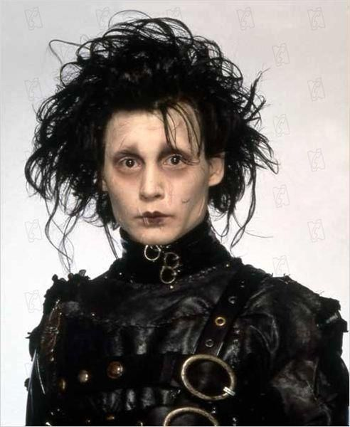
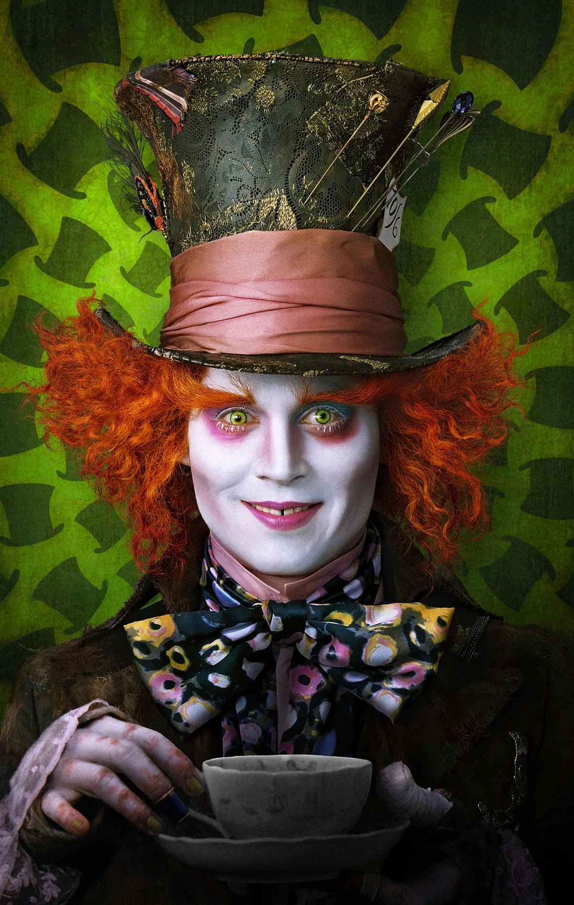

Joven Manos de Tijera
La historia de Edward Scissorhands narra la nueva vida de Edward una vez que la caritativa Peg Boggs lo encuentra encerrado en su mansión y lo adopta. Él no es un joven cualquiera. Sin ir más lejos, lo creó un inventor que murió antes de poder finalizarlo, dejándolo con un cuerpo humano y tijeras en lugar de manos y dedos. Cuando se instala en el barrio de Peg, un destellante y colorido universo de aventuras se despliega ante sus asombrados ojos.

Alicia en el pais de las maravillas
La historia de Edward Scissorhands narra la nueva vida de Edward una vez que la caritativa Peg Boggs lo encuentra encerrado en su mansión y lo adopta. Él no es un joven cualquiera. Sin ir más lejos, lo creó un inventor que murió antes de poder finalizarlo, dejándolo con un cuerpo humano y tijeras en lugar de manos y dedos. Cuando se instala en el barrio de Peg, un destellante y colorido universo de aventuras se despliega ante sus asombrados ojos.
